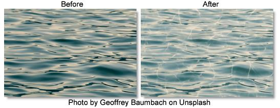

S_Caustics
Description
Simulates the patterns created when light rays are reflected or refracted by a curved surface. Caustics can often be seen at the bottom of a swimming pool in bright sunlight or on objects viewed underwater.
The S_Caustics filter comes from the Emmy award winning Boris FX Sapphire filter set.
Category
Render.
Controls
Presets
To select a preset, pick one from the Presets window.
Ray
Ray Focus
Alter this to bring the caustic pattern into focus.
Ray Density
Increasing this value will increase the quality of the caustic pattern.
Ray Blur
Softens the caustic pattern.
Caustic
Frequency
The frequency of the caustic pattern. Increase for more and smaller elements, or decrease for fewer and larger.
Complexity
The complexity of the caustic pattern. Increase for more high frequency components within the caustic pattern.
Shift
Translation of the caustic pattern.
Seed
Used to initialize the random number generator. The actual seed value is not significant, but different seeds produce different results and the same value should give a repeatable result.
Colors
Brightness
Scales the brightness of Color1. Increase for more contrast.
Color1
The color of the brighter parts of the texture. The colors of the result are determined by an interpolation between Color0 and Color1.
Color0
The color of the darker parts of the texture.
Offset0
Adds this value to color0. Decrease to a negative value for more contrast.
Bg Brightness
Scales the brightness of the image.
Bg Combine
Determines how the texture is combined with the Background.
Caustic Only
Renders only the caustic texture with no Background.
Mult
The texture is multiplied by the Background.
Add
The texture is added to the Background.
Screen
The texture is blended with the Background using a screen operation.
Difference
The result is the difference between the texture and Background.
Overlay
The texture is combined with the Background using an overlay function.
Show Shift
Enables/disables the on-screen control for adjusting the Shift parameter.